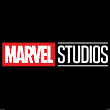

Um herói não é aquele que sempre vence. É aquele que sempre tenta. Miles Morales é um adolescente do Brooklyn que foi mordido por uma Aranha Geneticamente Alterada e se tornou o Homem-Aranha da Terra-1610 após a morte de Peter Parker.Miles é um adolescente afro-latino-americano, que vive em Nova York, e que assume o manto do Homem-Aranha após a morte de Peter Parker em sua dimensão
Watch the Trailer
